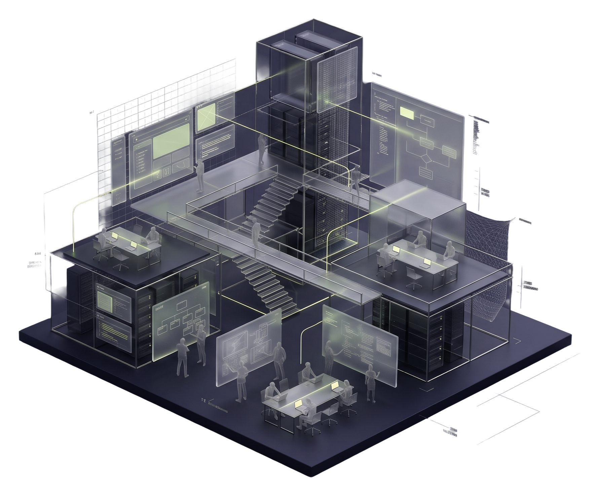
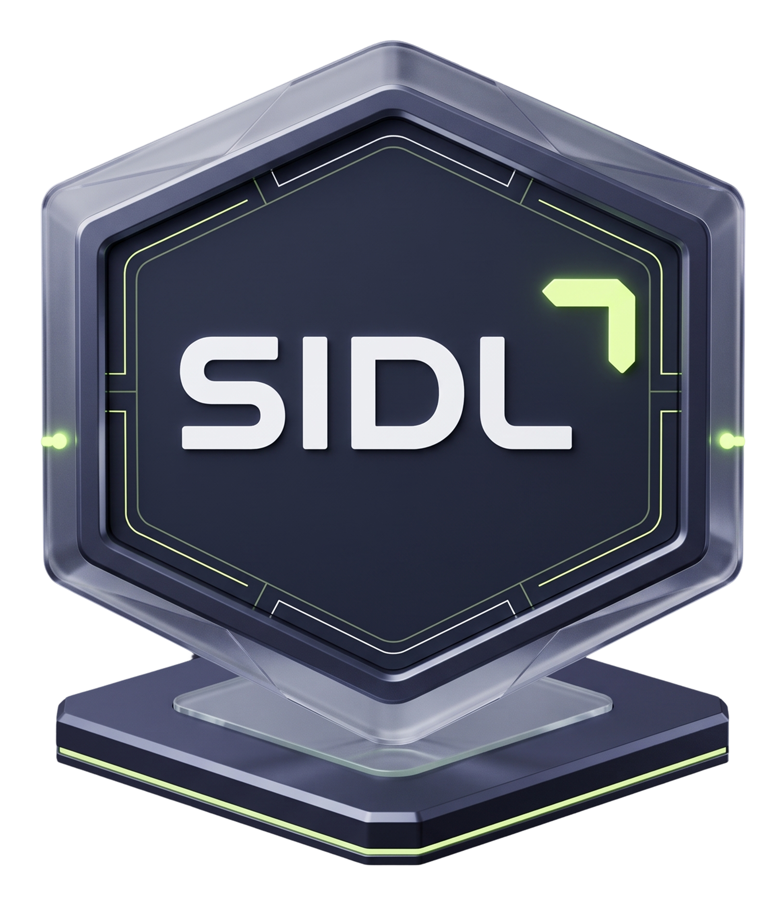
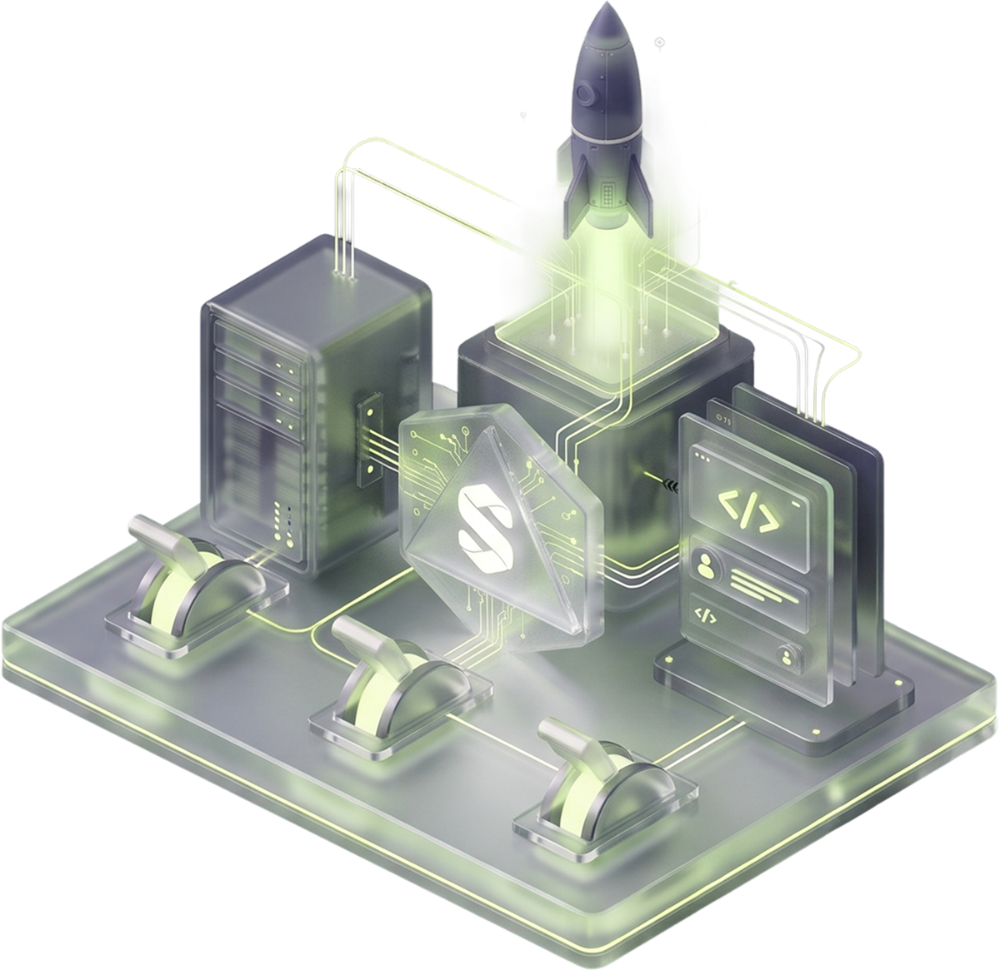

Echte Projekte.
Echte Erfahrung.
Echte Ergebnisse.
Wir entwickeln digitale Lösungen im Team. Wir schaffen reale Perspektiven für dein berufliches Wachstum.


- Projekt
- Budget
- Idee
Der Garant
- Sichert die Fristen
- Stellt das Team
- Bestätigt die Qualität
- Code
- Expertise
- Erfahrung
Discovery
Analyse der Anforderungen, UX-Audit und Definition der Projektziele.
Design
Erstellung von Design-Systemen, interaktiven Prototypen und UI/UX-Architektur.
Development
Agile Programmierung, Frontend & Backend Development im Sprint-Format.
Launch
Quality Assurance, Testing und Deployment des fertigen IT-Produkts.
Häufig gestellte Fragen (FAQ)
Wer trägt die Verantwortung für das finale Ergebnis?
Das SIDL Core-Team. Wir haben strenge QA-Prozesse (Quality Assurance) und feste Meilensteine etabliert. Die Abnahme erfolgt nach aktuellen Industriestandards, bevor Ihr Produkt live geht.
Wie kann ich mein Projekt einreichen?
Über „Projekt anfragen“: Sie beschreiben Ihre Aufgabe, wir melden uns und besprechen das weitere Vorgehen. Das erste Gespräch ist kostenlos.
Wer arbeitet konkret an meinem Projekt?
Ein Team aus erfahrenen und angehenden IT-Spezialisten unter der Leitung von SIDL-Kuratoren.
Warum können Sie so günstige Konditionen anbieten?
Unsere Talente sammeln bei echten Projekten praktische Erfahrung. Dadurch können wir faire Konditionen anbieten.
Wie viel kostet die Umsetzung meines Projekts?
Die Kosten hängen von Umfang und Anforderungen ab und werden individuell besprochen.
Feedback & Logs
Bereit für den Sprint?
